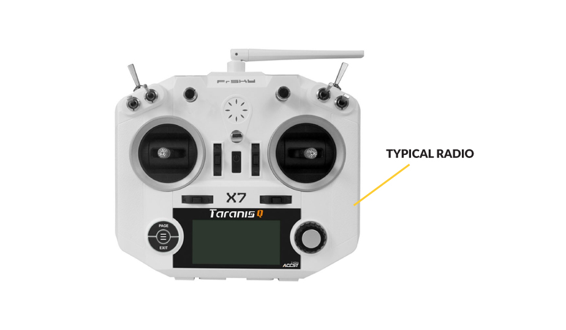

An FPV Drone Radio Transmitter is an electronic device that uses radio signals to transmit commands wirelessly via a set radio frequency over to the Radio Receiver, which is connected to an aircraft or multirotor being remotely controlled. In other words, it’s the device that translates pilot’s commands into movement of the multirotor.In some radios there is an option to connect an external transmitter module. This makes it possible to use a different frequency (for instance, 900MHz in a 2.4GHz radio) or a different receiver from another brand/protocol (Crossfire CRSF module with Crossfire V2 Micro Receiver in FrSky Taranis).
A FPV Drone Radio Transmitter transmits commands via channels. Each channel is an individual action being sent to the aircraft.Throttle, Yaw, Pitch and Roll are the four main inputs required to control the quad. Each of them uses one channel, so there is minimum of four channels required. Every switch, slider or knob on the transmitter uses one channel to send the information through to the receiver.The following is an example of the typical channel setup for FPV Racing: a switch for arming the aircraft, a switch for turning on the buzzer and a switch used to select different flight modes. For this reason, it is advised to have a 6 channel radio.Basic 4-6 channel radios are usually the cheapest. Radios with more than 6 channels are typically more expensive.
Gimbals are the sticks that translate a pilots input into the digital data transmitted to the radio receiver.There are two types of gimbals commonly used :
Hall Effect Gimbal (digital)
Potentiometer type Gimbal (analogue)
Hall Effect gimbals use hall sensors with magnets to capture the stick position values and is therefore more resistant to wear. These gimbals are also more precise.
Potentiometer type gimbals uses a brush to capture the value of stick inputs and is therefore prone to wear out much quicker.
Gimbal sticks are manufactured with M3 or M4 threads which allows you to attach different types of stick ends. Pilots that prefer flying with the “Pinch” method might prefer a different type of stick end to pilots that prefer flying with their thumbs. In general, sticks are approximately 25-27mm in length. They can be adjusted to suit personal preferences.Below is an example of the different types of stick ends:
When purchasing an FPV Drone Radio Transmitter, you need to determine which “Mode” you would prefer to use when flying.The mode determines aircraft movement assigned to a certain stick movement. There are 4 transmitter modes with Mode 2 being the most popular and is usually set as the default mode on most radios.
An FPV Drone Radio Transmitter commonly use the following frequencies: 27MHz, 72MHz, 433MHz, 900MHz, 1.3GHz and 2.4Ghz433Mhz, 900Mhz and 1.3GHz are typically used in long range FPV and RC systems.27Mhz and 72Mhz are older frequencies which were being used for many years in RC. Equipment operating on those frequencies used crystals to bind the Transmitter with a Receiver. Apart from a few RC toys still available on the market, they are rarely used.2.4GHz is most popular frequency. It is a newer technology and it offers “frequency hopping” which does the job of managing multiple users frequency transmitting at the same time. This id done by scanning the frequency band and finding the best available channel during the transmission. 2.4GHz antennas are very compact as well. Generally speaking the lower the frequency, the larger the antenna. For that reason, 2.4GHz quickly became the “go to” frequency.
OpenTX is an open source custom firmware made for RC radio transmitters, compatible with the following radios: (January 2018)
FrSky Taranis X9D, Q7X, X9E
FrSky Horus X10, X12
Turnigy 9X
FlySky 9X
OpenTX is a highly configurable system offering plenty options for all types of RC models. It is created by FPV pilots with pilots in mind and has frequent updates being released with bug fixes and new features.The main features of OpenTX is as follows:In flight audio/speech feedback with custom sounds that are stored on the transmitters Micro SD card
Can store a large number of models on the radio, even more if stored on the Micro SD card
Logical switches and special functions used to program custom behaviours on the radio (for instance having a custom audio feedback on low battery voltage or high mAH consumption)
LUA scripts – a powerful tool used to change the parameters of Video Transmitter or Flight Controller settings directly from the radio without connecting it to a computer
Allows flashing of radio receivers firmware directly from radio transmitter
Configurable via OpenTX Companion software where all models, settings and even entire radio transmitter firmware can be copied or backed up on the computer. Companion app can also emulate radio transmitter firmware on the computer
Telemetry is the data transmitted from the Radio Receiver back to the Radio Transmitter.It usually contain a variety information, depending on the type of radio and flight controller. The most crucial pieces of information are battery voltage reading, current draw and “RSSI” (Radio Signal Strength Indication).This Telemetry Data can be displayed on the telemetry screen (in OpenTX), and can also be customised as audio warnings.
A Radio Receiver is the device capable of receiving commands from the Radio Transmitter, interpreting the signal via the flight controller where those commands are converted into specific actions controlling the aircraft.Radio Receivers can have the following features:
Telemetry (sending data back to transmitter)
Redundancy function (two receivers connected together, if one loses connection, second one takes over)
Easy removable antennas (more convenient with connectors if antenna is to be replaced)
Possibility of firmware upgrades (for bug fixes)
Radio communication protocols can split into two groups:
TX Protocols between Radio Transmitter and Radio Receiver.
RX Protocols between Radio Receiver and Flight Controller
TX Protocols are in most cases specific to brands:
FrSky: D8, D16, LR12
Spektrum: DSM, DSM2, DSMX
FlySky: AFHDS, AFHDS 2A
Futaba: FASST
Hitec: A-FHSS
Devo: Hi-Sky
As for RX Protocols, some of them are universal:PCM, PWM, PPM, SBUS
However, there are also brand specific ones:TBS: CRSF Crossfire
Graupner: SUMD, SUMH
FrSky: FPort
Multiwii: MSP
Flysky: IBUS
JR: XBYUS
A Receiver must be compatible with the Radio Transmitter which in most cases means that the same brand of Rx and Tx need to be purchased in order to establish a communication. There are however radio receivers that may work with the same protocol but are not from the same brand.
Frequencies must also be the same on both Rx and Tx. For instance; a 2.4GHz Transmitter can only work with 2.4GHz Radio Receiver.
A Radio Transmitter will only communicate with a Radio Receiver if the two are binded. This process might differ on specific receivers and radios. Usually, this can be done by starting the bind process on the Radio and pressing BIND button on the receiver. The best would be to refer to the user manual of your specific Rx and Tx combo.It’s important to note that a single Radio Transmitter can be bound to multiple different Receivers. At the same time, a single receiver can only be bound to a single transmitter, not multiple transmitters.
Receiver antennas are usually soldered directly to the receiver main board or attached by U.FL connectors. Antennas are made from a coax cable where the main wire is separated from “ground”. Radio Receivers are usually manufactured with two antennas to ensure the best reception.
The main wire is the antenna active element which receives radio signals via a specific frequency. Length of the active element depends on the frequency and is exactly 1/4th of the wavelength for a specific frequency. Length of the antenna wire is not fixed; only active elements has to be at specific length. As am example, the wavelength for 2.4GHz transmission is 122mm. 1/4th of that equates to 30.5mm for the active element.Receivers usually come with two antennas for 2.4GHz Frequency. To achieve the best signal reception it is recommended to keep them at a 90degree angle in relation to each other when installed on the multi rotor.
Radio receivers come in a different sizes and shapes.Smaller receivers usually have molex connectors while bigger ones have pins soldered on. Smaller receivers are more convenient for smaller multirotors where mounting options for hardware is very limited. Bigger receivers with pins can be used in more spacious multirotor builds.
created with
Website Builder Software .